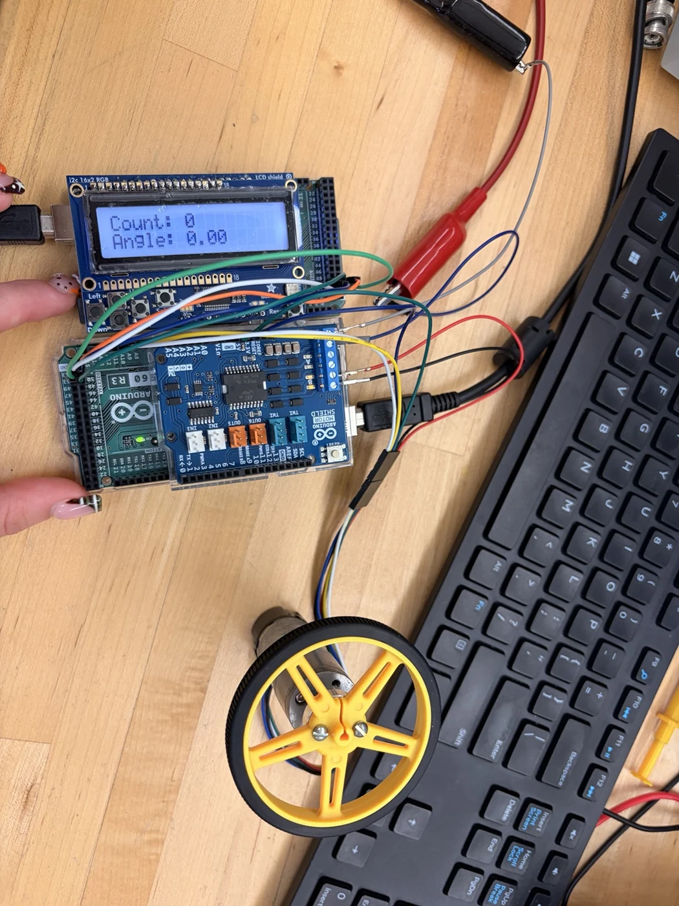
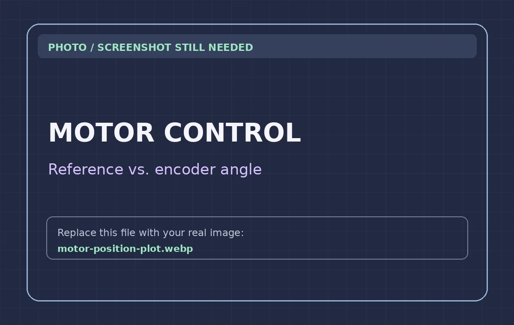
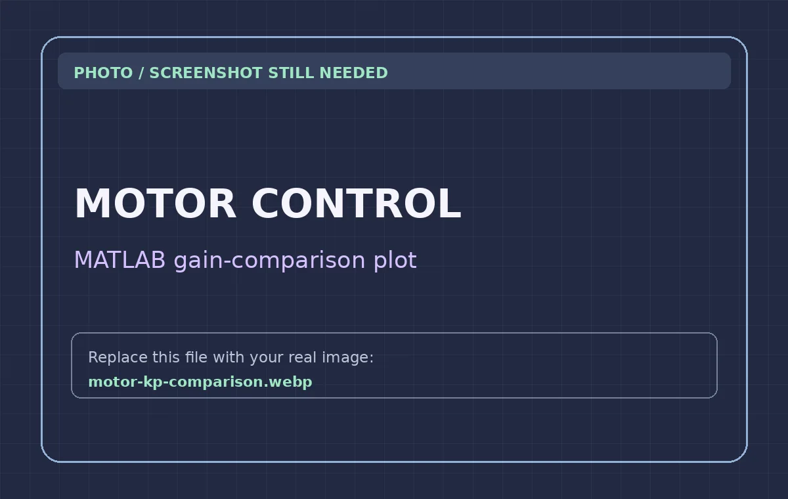
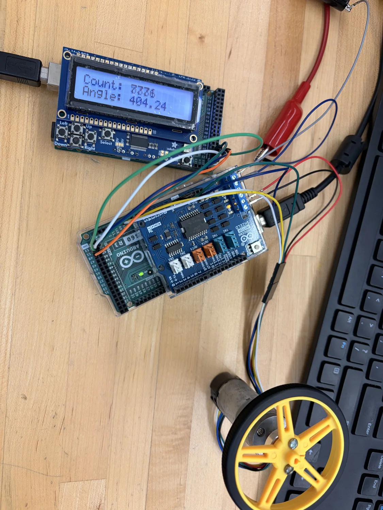
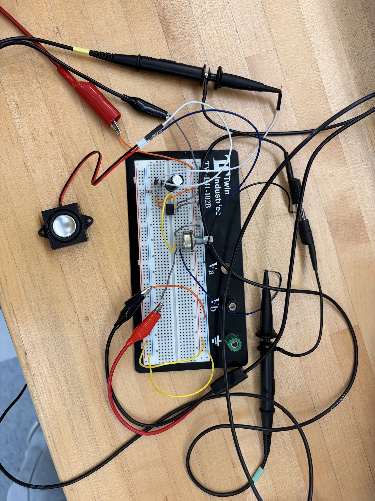
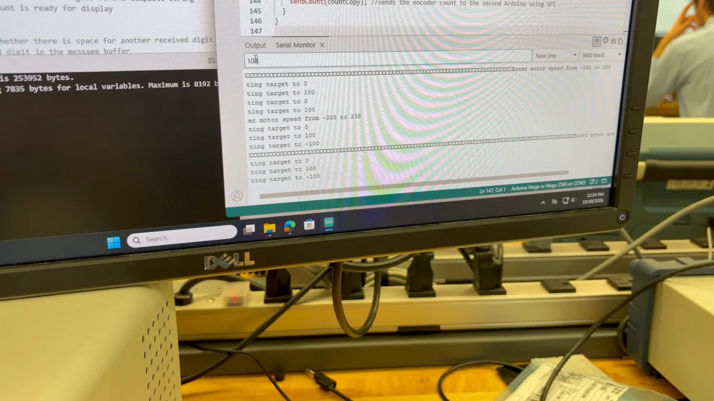

Encoder count
Track pulse counts and translate changes into angular position.
Coursework / ECE 112 / mechatronics
A DC gearmotor, an Arduino Mega, a quadrature encoder, an LCD, and MATLAB became my hands-on introduction to measuring and controlling motion — and to debugging the serial link between software and hardware.

01 / the setup
The encoder produces pulses as the shaft turns. The Arduino interprets those pulses to track position, while the LCD gives a quick local readout. MATLAB requests data over serial so I can plot the measured angle over time instead of watching the display and guessing.
The project progressed from position measurement and data capture into proportional-control experiments, where a controller gain changes how the motor reacts to a reference.
Without a sensor, the controller knows what it asked the motor to do but not where the shaft actually ended up. The encoder turns that motion into measurements that can be compared with the desired position.

02 / hardware-to-software path
Track pulse counts and translate changes into angular position.
Connect MATLAB and Arduino at the specified baud rate and exchange reference/measurement data.
Compare measured angle with the desired reference rather than relying only on a live readout.
03 / the serial bug
My initial MATLAB serial capture failed because the Arduino hadn't fully restarted and old data could still be in the serial buffer. I added a brief startup pause and flushed the buffered data before sending the reference angle.
With that adjustment, MATLAB completed a five-second capture. In the position-measurement test, I manually rotated the shaft so the measured angle changed while the reference stayed constant.
Important distinction: that hand-rotated recording was a measurement test, not a demonstration of closed-loop motor performance.

04 / moving toward feedback control
In the proportional controller experiments, I tested different gain values and observed the system response. My next step is to present the plots side by side so the differences are clear and honestly labeled.
Some of the gains I experimented with include 2, 5, 10 and 26. I'm not claiming an ideal gain or a measured performance improvement until the figures have been reviewed.
See what I'm testing now →
05 / more build documentation



A controller is only as useful as the measurements it's acting on. Getting dependable data from the physical system was a real part of this lab, not just the setup before the interesting work.